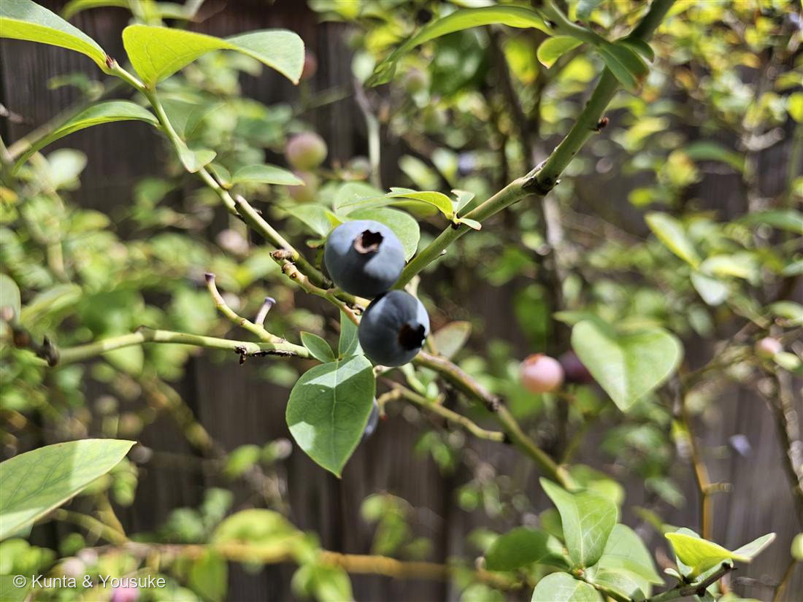

地図を読み込んでいるよ…
🔍 写真も地図も、押しているあいだ拡大して見られるよ（スマホは指を置いてすこし待ってね）。
🌍 の地図＝この子がもともと自生している場所を緑に。北米（栽培種）。
⚠これは栽培ブルーベリーのもとになった野生種たちのふるさと。品種は特定できないので、なかま全体の故郷を塗ったよ。
⚠ 地図は国（日本と中国だけ県・省）までしか塗れないから、ほんとうの分布より広く見えていることがあるよ。地図はだいたいの場所。正確なところは、上の文を見てね。
ブルーベリー
Vaccinium sp.（栽培ブルーベリー）
別名 · スノキ属の果樹
ツツジ科 · Ericaceae（スノキ属 Vaccinium）
名前と学名の由来
- Vaccinium（ワッキニウム）＝スノキ属を指す古いラテン語の植物名（語源は諸説）。栽培ブルーベリーは北米原産で、ハイブッシュ（V. corymbosum）やラビットアイ（V. virgatum）などの品種・交雑＝Vaccinium sp.。
- 和名の属名スノキ（酢の木）＝実が酸っぱいことにちなむ。ブルーベリー＝英語 blueberry（青い実）。
この植物のこと
- ツツジ科スノキ属の低木の果樹。実の先の星形のがく（王冠のような宿存萼）が目印。表面の白い粉はブルーム（日よけ・水はじき＝No.016 王冠竜の青白さと同じ役目）。
- 青紫の色はアントシアニン——No.007 シロツメクサの赤模様、No.015 ホーリーバジルの葉裏と同じ色素の仲間。抗酸化のはたらきがあり「目にいい」といわれるのもこれ。
- 実は緑 → 赤紫 → 青紫と熟す（写真の背景に、まだ赤い未熟果が見える）。初夏〜夏が収穫どき。花は釣鐘・壺形の白い花で、スズランやドウダンツツジに似る（ツツジ科のしるし）。
- 酸性の土を好む変わり者（ツツジ科は酸性土壌好き）。だから育てるときはピートモスなどで土を酸性にととのえる。
花言葉
- 日本で
- 実りのある人生／知性。
- 英語圏
- Greenaway 1884 に、ブルーベリーは載っていない。載っていないことにも、ちゃんと理由がある（下）
なぜ、そうなったか：「実りのある人生」は、春に白い釣鐘の花をたくさん咲かせて、夏に青い実をどっさりつけることから。
そして、英語圏の欄が空っぽな理由。Greenaway 1884 を調べると、同じスノキ属（Vaccinium）の Whortleberry — Treason.（裏切り）と Bilberry — Treachery.（裏切り）は載っている。でもこれはヨーロッパの野生のビルベリーで、この写真の栽培ブルーベリーとは別の種だ。
栽培ブルーベリーはアメリカで20世紀に作られた、とても新しい果物なんだ。USDA の Frederick Coville が「この木は pH 4.5〜4.8 の酸性土でしか育たない」と突きとめたのが1910年、最初の交配が1911年、最初の商業収穫が1916年。
——1884年の本に載っていないのは、当たり前だった。まだ、この世にいなかったんだ。
（ちなみに Coville が見つけた「酸性土でしか育たない」は、上に書いたスノキ＝酢の木の話とそのままつながっている。名前のほうが、100年先に答えを言っていたことになるね。）
だから、ここに「裏切り」とは書かないよ。ぼくの大好物が裏切り者なのは、ちょっといやだしね。えへへ。
参考：Kate Greenaway Language of Flowers(1884)・Project Gutenberg（原文を検索して確認）／花言葉-由来／USDA「Celebrating the Highbush Blueberry's Centennial」